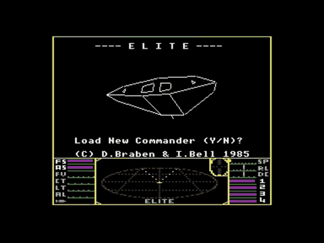

Free & open source · Java desktop toolkit
ED-MONITOR
Your Elite Dangerous journal, turned into a live command console.
v0.3.1
Features
-
Live journal monitoring
Polls the Elite Dangerous journal every second and reads only new data; the whole journal is replayed at startup so trackers are rebuilt from scratch.
-
Colonisation construction tracking
Tracks construction sites and the materials still required vs. delivered; highlights required and carried commodities.
-
Cargo tracking
A reconciled view of what is in the cargo bay, matched against docked market data.
-
Route optimizer
Plans multi-market delivery runs per construction site with cargo-capacity and max-market constraints; shows per-run leg breakdowns and tonnage coverage.
-
Persistent market data
An optional local server stores market data (H2 database) and exposes a small REST API on port 50080; the desktop client syncs with it automatically.
-
Dark & light themes
Modern FlatLaf themes, detects the Windows 11 theme, switchable at runtime.
-
Overlay mode and shortcuts
Compact overlay mode; double-press Esc to minimise the main window, single Esc closes dialogs.
-
Asteroid mining helper
Shows proportions of the most valuable metals with colour-coded highlighting.
Screenshots
Route Optimizer
Plan multi-market delivery runs per construction site, scored by stock, scarcity, same-system proximity and planetary-port penalties.
-
Load site context and candidate markets
-
Tune cargo capacity and max markets per run
-
Read the leg breakdown and tonnage coverage
How it works
Timeline
-
0.3.1
Route optimizer locality scoring fix; fixed a backend startup race; log viewer and UI scaling settings.
-
0.3.0
Dark/light themes, Elite-inspired material highlighting, global key bindings, route optimizer polish.
-
0.1.1
Asteroid mining helper (metal proportions with colour coding).
-
0.1.0
Reworked core, commodity tracker matched to docked market data, reliable cargo-bay tracking.
Get started
Requires JDK 21+ and Maven to build. Built with Java (Swing desktop client, Spring Boot server). Runs on Windows.
git clone https://github.com/zzergAtStage/ed-monitor.git
cd ed-monitor
.\mvnw clean install -DskipTests
.\mvnw -pl ed-monitor-swing -am exec:java